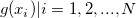
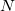

Algorithm (Decimate)
Decimt-Algorithm
Two filters can be used to perform the decimation, including FIR filter and moving average filter.
FIR Filter
FIR filter used in this X-Function is a finite impulse response filter based on regular window. The filter order is specified by the Order variable.
Moving Average Filter
When the Moving Average filter is applied, Origin performs the following steps:
- Generate a new dataset with the same size of the input range. Each datum in the new dataset is the average of the data points within the moving window. The size of the moving window is determined by the Resample Factor specified in the dialog. Let {} be the Y value of the input data points and {} denote the Y value of the new dataset, where  is the size of the dataset. Each is computed by the following formula:
/math-b4ea18191abef993ba2ed5e9125ec7ad.png "g(x_i)= \begin{cases} \frac{\textstyle \sum_{k=0}^{I} f(x_{N-(i-1)-k})}{I+1}, & i<N+1-I\\ \frac{\textstyle \sum_{k=1}^{N-(i-1)} f(x_k)}{I+1}, & i>N-I \end{cases}")
- Repeat the calculating process in step 1. This time using the new created dataset as the input range to create a new dataset
/math-ca8e608169b20a94570ac837e8ba0833.png "h(x)") .
.
- Use the new created dataset as the input range to perform decimation with no filter applied.